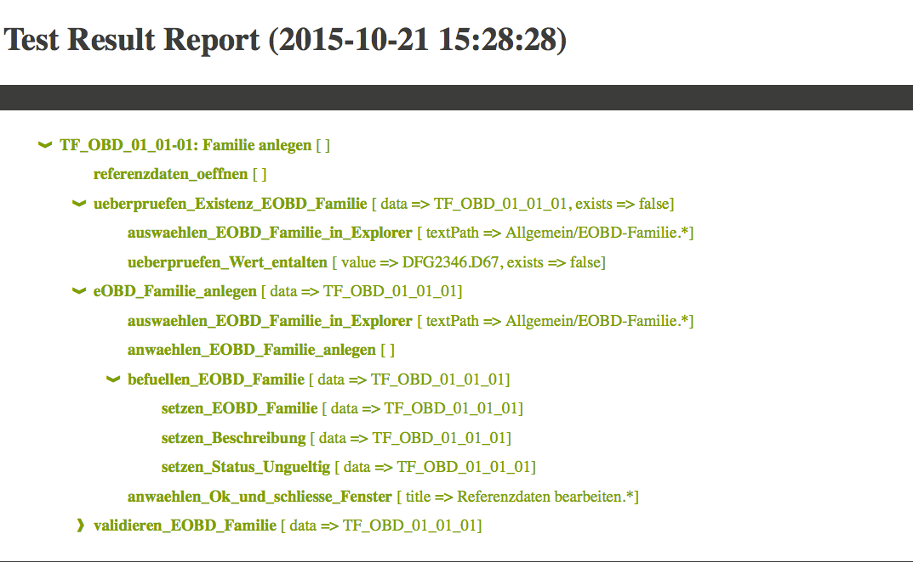

Topics
Continuous integration
Test result reporting
Patterns for UI test automation
Upcoming features
Conclusion
Continuous integration
- Prepare environment (test data, build AUT, build tests)
- Prepare test machine (start, clean up, deploy, configure)
- Run tests (start AUT Agent, run tests)
- Collect information (collate results, copy logs, ...)
Test result reporting
JUnit reports
Self-created reports

Patterns for UI test automation
Come to Alex's talk in the FMZ at 12.00pm tomorrow!
Upcoming features
Embedded Agent support for the Client API
MakeR.createCIWithGivenName("value1")
Conclusion
- The Jubula Client API lets you write tests for your applications
- Wide range of actions available
- Extensible
- Object mapping (since Oxygen) available without the ITE
- Test design is important regardless of the tool
- Support and help available via the Eclipse Forum or from the Jubula Team